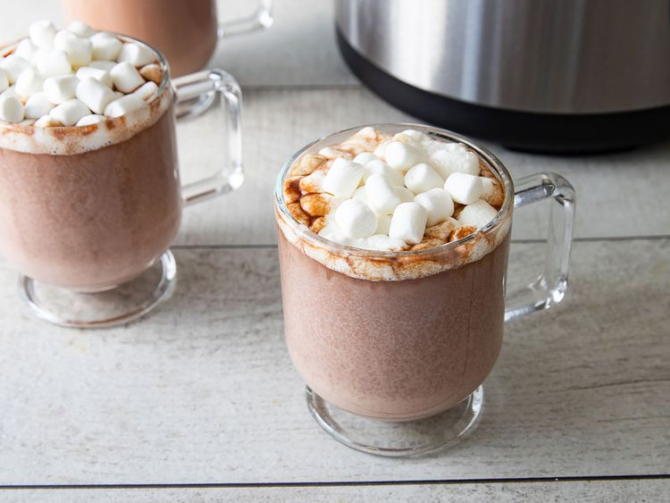
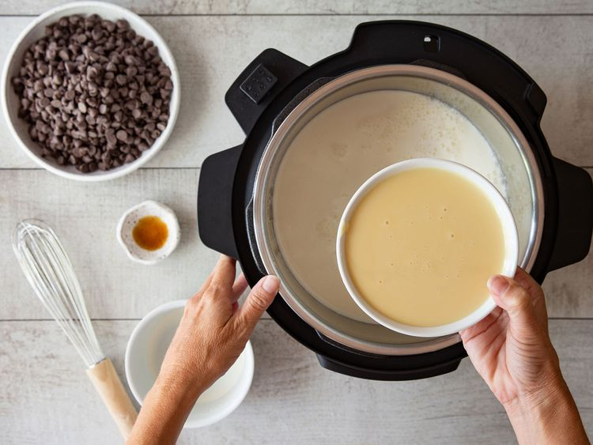
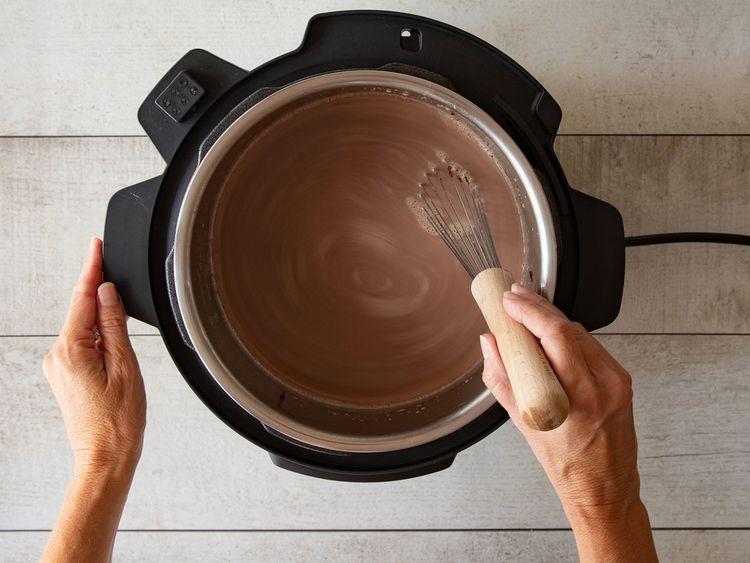

Home page
Best Slow Cooker Hot Chocolate

This easy crockpot hot chocolate is easy to make with just five ingredients. Trust us: You'll want to bookmark this incredibly cozy slow cooker hot chocolate recipe ASAP.
Ingridients:
- 6 cups milk
- 2 cups semisweet chocolate chips
- 1 ½ cups heavy whipping cream
- 1 (14 ounce) can sweetened condensed milk
- 1 teaspoon vanilla extract
Directions:
-
Combine milk, chocolate chips, cream, condensed milk, and vanilla in a slow cooker.

-
Cover and cook on Low, stirring occasionally, until chocolate chips are melted and mixture is smooth, about 2 hours.
